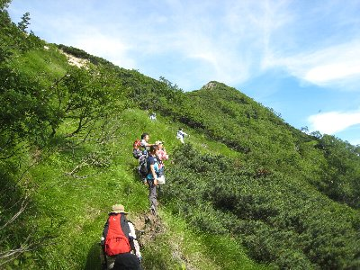
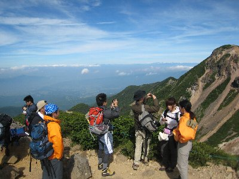
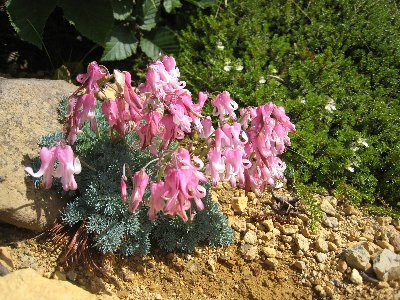
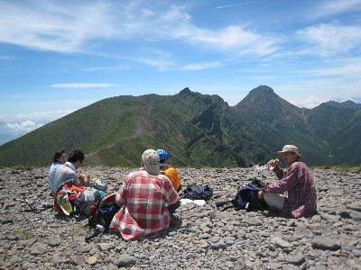

硫黄岳・根石岳（八ヶ岳）トレッキング | 2008年8月 幹事：Ryuuさん |
|---|---|
八ヶ岳に登って温泉に入ろう！ 八ヶ岳ってどこに有るか知ってますか？ 山梨・長野県にまたがる山脈で赤岳などが有名ですよね。標高はそこそこ高く3000m級がいくつかあります。 今回はその内の硫黄岳（2742m）、根石岳（2603m）を温泉つきで攻めてみようって事になりました。 2742ｍって聞くと、そんな体力ないよ〜とか、無理無理！と思いがちかも知れませんが、普段運動していない私が登れるし、荷物は山小屋泊まりなので少なくて済んじゃうし、時間も余りかからないので結構登れちゃいます。今回は8人パーティーです。 | |
 さあ、出発です！と言っても今日は山荘までの2時間。 |  本沢温泉の野天風呂。顔見えないから良いよね。 |
| 《一日目》 お昼を野辺山のレストランで取った後、車で行ける所まで行き、そこから歩いて二時間で山小屋「本沢温泉」着です。はい、今日はこれで終了〜 その名の通り、ここが目的の温泉です。山小屋には珍しく内風呂はもとより、野天風呂と称する温泉が有るんです。野天風呂は、硫黄岳を望む沢の横に、３ｍ×２ｍ位の風呂がデデンと据え付けられていて、囲いはありません。脱衣所もありません。女性客が居ない事を確認しつつ、まっ裸になり入りました。 お湯は乳白色した硫黄の匂いがします。別に水洗口やらお湯の吐き出し口も見当たらないけど、いい湯加減で、ビールを飲みながら入ると最高です。浴槽の壁からお湯が染み出しているようで、所々熱いお湯が出てきます。 囲いも何もなく、雄大な景色が広がる開放的風呂。結構贅沢ですよね。あ、蛇口等はないので、体は洗えません。 夕食後、早々と寝てしまう人たちに迷惑にならないよう外で軽く宴会。軽くと言いながら、ビールや日本酒を飲んで、かなりいい気分になりました。21時頃には就寝したと思います。 | |
 今日も張り切って登りましょう！二日目スタァートォ！ |  もうすぐ尾根だ！ |
| 《二日目》 私が起きたのは4時半位でしょうか。外は明るく、早い人は出発の準備をしていました。 6時から朝食を取り、7時前には出発。昨日の緩い坂ではなく、山登り的な道を1時間ちょっと登ると尾根に出ます。やや、以外に近い。（途中でリタイヤしそうな人が居ましたが頑張りました） 尾根は風が強かったのですが、天狗岳や根石岳が見えます。景色もアルプスチックになり、遠い山々や雲海が見えます。小屋から1時間ちょっとでこれだけの景色は、お得感ありますね。 さらに30分（も掛からない）ほどで根石岳です。360度の景色が素晴らしい！ | |
 尾根は風が強かった |  根石岳山頂より |
| 根石からは、硫黄岳に向かうコースをとり、途中の夏沢峠で「今日はこれぐらいで勘弁してやる」3人組と別れ、3人は本沢温泉へそのまま下りました。今回のコースは自分の力量に合わせ、途中退場出来るのが良いですね。 さて、残りの5人は硫黄岳を目指し登ります。 硫黄岳は山頂付近が崩落を起こして、欠けたクレーターの様な、若しくはグランドキャニオンみたく大きな崖が広がっています。山頂自体は平たいため、どこが一番高い所なのかわかりませんが、石ばかりの場所です。南側には南八ヶ岳の赤岳・横岳が見えます。 根石岳の隣の山と言う位置だけど、景色や雰囲気がまるで違います。 | |
|  コマクサ |  硫黄岳の崖っぷちは凄いですね〜 |
| ここでお昼を取った後、登って来た道とは違うルートを下り、オーレン小屋を経由して、夏沢峠→本沢温泉→駐車場と帰りました。帰りは下りの連続だったためか、私は膝が結構痛くなりましたが、とりあえず無事到着。 天気も良かったので、十分「高い山に登った」感があり満足です。今回、初めてアルプス級の山に登った方もいますが、非常に満足されていた様子で良かったですね。山を仰ぐと「あんな高いところ絶対無理」と思うのですが、意外に人間ってこつこつと登れてしまうものです。 ちょこっと行く気になると、非日常風景が味わえますよ。 | |
 硫黄岳 |  硫黄岳の山頂でお昼を食べながら赤岳方面を見る |
| 写真＆コメント ｂｙ べっしー | |